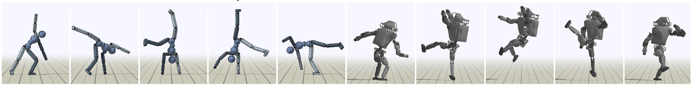

DeepMimic: Example-Guided Deep Reinforcement Learning of PhysicsBased Character Skills¶
核心内容¶
这篇论文提出了一种通过深度强化学习 (Deep RL) 让物理仿真角色（如机器人、恐龙、人类）学会高难度动作（如后空翻、回旋踢）的方法。
解决问题¶
- 纯物理仿真通常动作僵硬、不自然（像僵尸）。
- 纯动画数据 (Mocap) 看起来自然但无法物理互动（撞到墙会穿过去）。
- 之前的 DeepRL 虽然能物理互动，但动作极其怪异（比如甩着手臂跑步），且很难学会复杂的特技动作 。
核心解法： 将“模仿动作捕捉数据”作为一个强约束奖励，结合PPO算法，并引入了两个至关重要的训练技巧（RSI 和 ET），让角色既能像真人一样动，又能完成特定任务（如打靶、走平衡木）。
什么是 PPO 算法 (Proximal Policy Optimization)？
定义： PPO（近端策略优化）是 OpenAI 在 2017 年提出的一种深度强化学习算法。在这篇论文中，它是用来训练神经网络（即角色的“大脑”）的核心算法 。
通俗解释： 想象你在学后空翻：
- 普通算法 (Vanilla Policy Gradient): 你尝试了一次，偶然成功了，于是你告诉自己“刚才那个感觉是对的，我要彻底改变我的习惯，全部按刚才那样做”。结果下一次因为步子迈太大，直接摔惨了，甚至忘掉了之前怎么走路。这叫“更新步长太大，导致训练崩溃”。
- PPO 算法: 你尝试了一次成功了，PPO 会说：“好，我们往那个方向改一点点，不要改太多，保持在‘安全区域’（Trust Region）内”。
论文效果¶

- 通过使用论文中提出的方法，模仿捕获到的参考动作片段，学习高动态技能
- 由物理模拟角色执行
- 左边：人形角色模仿车轮
- 右边：模拟Atlas机器人执行旋踢动作

- 论文中提出的框架可以为多种角色提供策略训练

- 表演各种技能的模拟人物
系统概览¶
- 系统的输入：
- 一个角色模型（Character model）。
- 一组运动学参考动作（Reference motions），即动作捕捉数据。
- 一个由奖励函数定义的任务（Task），比如“向特定方向跑”或“击打目标” 。
- 系统的目标：
- 生成一个控制器（Controller/Policy），让角色在物理仿真环境中既能模仿参考动作的风格，又能完成特定的任务目标（如对环境扰动作出反应） 。
关键贡献与创新点¶
Policy（策略网络）¶
Given a reference motion clip, represented by a sequence of target poses \(\widehat {q}_t\), the goal of the policy is to reproduce the desired motion in a physically simulated environment, while also satisfying additional task objectives. Since a reference motion only provides kinematic information in the form of target poses, the policy is responsible for determining which actions should be applied at each timestep in order to realize the desired trajectory.
中文翻译如下：
给定一个由目标姿态序列 \(\{\hat{q}_t\}\) 表示的参考动作片段，该策略（Policy）的目标是在物理仿真环境中复现这一期望动作，同时满足额外的任务目标。由于参考动作仅提供了目标姿态形式的运动学信息，因此该策略需要负责决定在每一个时间步应采取何种动作，以实现期望的轨迹。
- 输入： 只有“运动学信息”（就是==动作的样子==，没有力、质量等物理信息）。
- 任务： 策略网络必须自己算出如何发力（Actions），才能在有重力和摩擦力的物理世界里，把这个动作“演”出来。
States and Actions¶
- 输入：状态 (State \(s\))——AI 看到了什么
- 身体信息： AI 并不看图像，而是读取身体各部位相对于根节点（骨盆）的位置、旋转（使用四元数）以及速度
- 坐标系： 所有数据都基于角色的局部坐标系（Local Frame），以骨盆为原点，面朝方向为X轴。这意味着无论角色在地图哪里，只要姿势一样，输入数据就一样，简化了学习。
- 时间感知： 引入了一个相位变量 (\(\phi\))。这是一个 0 到 1 之间的数字，告诉 AI 动作进行到了什么阶段（比如 0.5 代表动作做了一半），这对周期性动作（如跑步）至关重要。
- 任务目标： 如果有特定任务（如打靶），还会输入目标信息 (\(g\))。
- 输入变成了
(状态, 目标)。比如“当前姿势是站立，目标是前方5米”，网络就会计算出向前走的动作。
- 输入变成了
- 输出：动作 (Action \(a\)) —— AI 怎么动
- 控制方式： AI 输出的不是肌肉的力矩（Torque），而是PD控制器的目标角度（Target Orientations） 。
- 球形关节（如肩）： 输出轴角（Axis-angle），3自由度 。
- 旋转关节（如膝）： 输出标量角度，1自由度 。
- 控制频率： 30Hz。
- 为什么用 PD 控制器？ 相比于直接控制力矩，PD 控制器抽象掉了底层的物理细节（如阻尼），已被证明能让 AI 学得更快、表现更好 。
Network¶

- 输入：神经网络接收角色的状态 (\(s\)) 和目标 (\(g\))，并将其映射为动作的概率分布。\(s\) 和 \(g\) 前面说过。
- 高斯分布输出： 动作输出被建模为高斯分布（正态分布）：\(\pi(a|s, g)\)。
- 均值 (\(\mu\))： 由网络根据当前状态预测得出。
- 方差 (\(\Sigma\))： 是一个固定的对角矩阵，作为一个超参数预先设定，用来控制探索的随机性。
- 输出 \(\mu(s)\)，是一个高斯分布的均值，代表每个关节 PD 控制器的目标角度（Target Orientations）。
基础网络架构（无视觉）¶
- 功能：用于平地行走或特技动作，不需要感知地形。
- 结构：标准的多层感知机（MLP），包含两个全连接隐藏层 。
- 规模：第一层 1024 个神经元，第二层 512 个神经元 。
- 激活函数：隐藏层全部使用 ReLU 。
- reward：用于评估状态好坏的 Critic 网络结构几乎完全相同，唯一的区别是输出层只有一个神经元（输出标量值） 。
视觉增强网络架构（有视觉）¶
- 功能：用于需要走楼梯或避障的任务。
- 新增输入：增加了一个高度图 (Heightmap) \(H\)，用于感知周围地形的凹凸 。
- 第一层卷积： 使用 16 个 \(8 \times 8\) 的滤波器 (Filters)。这层主要提取粗糙的地形特征（比如哪里有大坑）。
- 第二层卷积： 使用 32 个 \(4 \times 4\) 的滤波器。进一步提取细节特征。
- 第三层卷积： 使用 32 个 \(4 \times 4\) 的滤波器。
- 压缩与映射（关键一步）： 经过三层卷积后，得到的特征图被压平，并通过一个包含 64 个神经元的全连接层。
- 卷积处理：使用卷积层 (Convolutional Layers) 专门处理高度图，提取地形特征 。
- 特征融合：提取出的地形特征会与身体状态 (\(s\)) 和目标 (\(g\)) 拼接 (Concatenate) 在一起，然后输入进上述的全连接网络中进行最终决策。
Reward¶
| 奖励项名称 (Name) | 具体公式 (Formula) | 参数意义 (Parameters) | 物理/公式意义 (Significance) | 权重 (Weight) |
|---|---|---|---|---|
| 总奖励 (Total Reward) | \(r_t = \omega^I r_t^I + \omega^G r_t^G\) | \(\omega^I, \omega^G\): 模仿与任务的权重 \(r^I\): 模仿奖励项 \(r^G\): 任务奖励项 | 平衡机制：决定角色是更侧重于“像人一样动”（模仿），还是更侧重于“完成目标”（任务）。 | \(\omega^I=0.7\) \(\omega^G=0.3\) 1 |
| 总模仿奖励 (Total Imitation Reward) | \(r_t^I = w^p r_t^p + w^v r_t^v + w^e r_t^e + w^c r_t^c\) | \(w^p, w^v...\): 各子项权重 \(r^p, r^v...\): 各子项奖励值 | 多维约束：将“模仿”拆解为姿态、速度、手脚位置、重心四个维度，避免单一指标导致的动作变形。 | N/A |
| 1. 姿态奖励 (Pose Reward) | \(r_t^p = \exp[-2(\sum_j \|\hat{q}_t^j \ominus q_t^j\|^2\) | \(\hat{q}_t^j\): 参考动作第j个关节的四元数 \(q_t^j\): 角色当前的四元数 \(\ominus\): 四元数差分运算 | 形状相似度：衡量角色身体每个关节弯曲的角度是否与参考动作一致。这是模仿的基础。 | \(w^p=0.65\) 2 |
| 2. 速度奖励 (Velocity Reward) | \(r_t^v = \exp[-0.1(\sum_j \|\hat{\dot{q}}_t^j - \dot{q}_t^j\|^2\) | \(\hat{\dot{q}}_t^j\): 参考动作的关节角速度 \(\dot{q}_t^j\): 角色当前的关节角速度 | 动态节奏：衡量动作的快慢节奏。防止角色虽然姿势摆对了，但其实在剧烈抖动或动作僵硬。 | \(w^v=0.1\) 3 |
| 3. 末端执行器奖励 (End-effector Reward) | \(r_t^e = \exp[-40(\sum_e \|\hat{p}_t^e - p_t^e\|^2\) | \(\hat{p}_t^e\): 参考动作手/脚的世界坐标 \(p_t^e\): 角色当前手/脚的世界坐标 \(e\): 遍历左/右脚和手 | 接触精度：强约束（系数-40最大）。强制手脚的位置必须精准，防止滑步（脚底打滑）或悬空，确保物理接触真实。 | \(w^e=0.15\) 4 |
| 4. 质心奖励 (Center-of-mass Reward) | \(r_t^c = \exp[-10(\|\hat{p}_t^c - p_t^c\|^2\) | \(\hat{p}_t^c\): 参考动作的质心位置 \(p_t^c\): 角色当前的质心位置 | 整体平衡：衡量身体重心是否稳。防止角色虽然手脚位置对了，但整个人其实已经失去平衡快要歪倒了。 | \(w^c=0.1\) 5 |
TRAINING¶
- 核心算法：PPO 算法。这是一个非常稳健的算法，它能保证每次学习更新时，策略网络不会发生剧烈的“突变”，防止训练崩溃。
- 双网络架构(Actor-Critic)：系统里有两个神经网络在同时训练 ：
- 策略网络 (\(\pi\), Policy): 也就是“演员”，负责做动作。之前已经说过了。
- 价值网络 (\(V\), Value): 也就是“评委”，负责打分，告诉演员当前状态好不好。
- 输入 (Input): \(s\)、\(g\) 以及 \(H\)(可选)
- 输出：单一标量 (Single Scalar): 代表 \(V(s)\)，即预测“站在当前这个状态下，直到游戏结束，我总共能拿到多少分” 9。如果这个分很高，说明当前姿势很有前途；如果分很低，说明快要摔倒了。
- 数据收集方式 (Episodic & Rollouts): 训练是按“回合”进行的。机器人在模拟环境里动一会（Rollout），收集一堆数据（状态、动作、奖励），然后用这批数据来更新大脑 。
- 数学工具 (GAE & TD) ：
- 功能：处理奖励信号。在原始的强化学习中，奖励 \(r\) 往往很嘈杂（比如偶尔运气好不摔倒），直接用它来更新网络会导致训练不稳定。TD 和 GAE 就是两个“滤波器”，让信号更准、更稳。
- TD(\(\lambda\)) —— 用来训练“评委” (Value Update)：
- 公式逻辑： 评委不能只看眼前的奖励 \(r_t\)，也不能傻傻地等几千步后看总分（方差太大）。TD(\(\lambda\)) 采用了一种折中方案：它计算一个 \(\lambda\)-return (\(R_t(\lambda)\))，这是==近期奖励和远期预测的加权平均==。
- 使用：
- 使用 TD(\(\lambda\)) 公式计算“真实应该得多少分”
- 更新网络： 计算 \(V(s)\) 预测的分数和 \(y_i\) 之间的差距（Loss），然后用梯度下降修整 \(V\) 网络，让它下次猜得更准。
- GAE(\(\lambda\)) —— 用来训练“演员” (Policy Update)：
- 目的： 告诉策略网络 \(\pi\)，刚才那一步动作到底是“好”还是“坏”。
- 核心概念：优势函数 (Advantage, \(A_t\))：
- 公式：\(\hat{A}_t = R_t(\lambda) - V(s_t)\)
- 这里，\(R_t(\lambda)\) 是 TD 算出来的更准的回报，\(V(s_t)\) 是评委之前的预测。
- 意义：如果只告诉演员“你得了 10 分”，演员不知道这算高还是低。优势函数的意思是：实际得分 - 评委预测的平均分。如果结果是正的，说明这一步“超常发挥”，要鼓励；如果是负的，说明“低于预期”，要抑制。
- 使用：
- 在 PPO 的更新公式中，使用 GAE 计算出的优势 \(\hat{A}_t\) 来加权梯度。
- 如果 \(\hat{A}_t\) 很大，PPO 就会大幅增加该动作的概率。
- 如果 \(\hat{A}_t\) 很小（负数），PPO 就会减少该动作的概率。
Initial State Distribution¶
初始状态分布 \(p(s_0)\) 决定了智能体在每一回合开始时所处的状态。
传统痛点¶
- 对于 \(p(s_0)\)，一个通常的选择是将智能体总是置于一个固定的状态（通常是第0帧）。
- 对于模仿特定动作的任务，一个简单的策略是将角色初始化为动作的起始状态，并允许它在一个回合的过程中朝着动作的结束推进。
- 在这个设计下，策略必须以顺序的方式学习动作：首先学习动作的早期阶段，然后逐渐推进到后期阶段。在掌握早期阶段之前，后期阶段几乎无法取得进展。
- 后空翻悖论(The Backflip Paradox)：对于像后空翻这样的动作，这可能会有问题，因为学会落地是角色从跳跃本身获得高回报的先决条件。
- 局部最优陷阱：
- 如果角色尝试起跳，但因为不会落地，结果脸着地（摔得很痛，奖励极低）。
- 如果角色站着不动，虽然没有模仿动作，但至少不会摔得很惨（奖励一般）。
- 结论： AI 会觉得“跳跃 = 惩罚”，于是它选择永远站着不动。这就是为什么很多 RL 论文里的角色学不会后空翻的原因。
- 探索难题(Exploration Challenge)：策略只有在访问了一个状态后，才能回顾性地获得奖励。因此，在访问到高回报状态之前，策略无法得知该状态是有利的。
- 如果角色从没成功翻过去过，它就不知道“翻过去后的姿势”能拿满分。它只知道尝试翻的过程很痛苦。
Reference State Initialization (RSI)¶
通过从参考动作中采样初始状态，智能体即使在尚未获得到达那些状态所需的能力之前，也能在动作过程中遇到理想的状态。
考虑学习后空翻的挑战。如果使用固定初始状态，为了让角色发现“在空中完成旋转”能带来高回报，它必须先学会一个精心协调的起跳。
然而，为了让角色有动力去执行这样的起跳，它必须意识到起跳会导向高回报的状态。因此，智能体不太可能遇到成功空翻的状态，也就永远无法发现这些高回报状态。
- 有了 RSI，智能体在训练的早期阶段就能立即遇到这些有希望的状态。
- 随机穿越： RSI 允许角色直接出生在半空中（比如动作的第 20 帧）。
- 独立学习：
- 角色可以直接练习“从半空落地”，而不需要先学会起跳。
- 一旦学会了“落地能拿高分”，价值网络（Critic）就会给空中的状态打高分。
- 反过来，这会激励角色去学习“起跳”，因为它知道起跳后到达的那个空中状态是值钱的。
- 打通闭环： RSI 把一个长的因果链条（起跳->腾空->落地）打断，变成了并行的练习题。
Early Termination¶
相较于上面所说的 RSI 的“在哪里启动”的问题，ET 研究的更偏向于“在哪里关闭”的问题。
- 回合终止(episode terminates)：一个回合要么在固定时间段后终止，要么在触发某些终止条件时终止 。
实际上，ET 早已有所使用。但论文作者认为之前的论文并没有认真研究过这个技巧为什么这么重要。
这篇论文中采用的具体实施方法如下：
- 只要某些身体部位（如躯干或头部）与地面接触，就立刻终止当前回合 。
- 一旦触发早期终止，角色在回合剩余的时间内将获得零奖励 。
- 这是一个隐性的惩罚。原本如果它坚持不倒，每一步都能拿到很高的模仿奖励。现在因为倒了，后面本来能拿的分全没了。
- 这种早期终止的具体实现提供了另一种塑造奖励函数的方法，旨在抑制不受欢迎的行为（指摔倒） 。
实际上，早期终止要有一个有点，他可以作为一个数据筛选机制 (Curating Mechanism)，使数据分布偏向于对任务更相关的样本 。
具体来说，训练神经网络需要数据。ET 保证了喂给网络的数据都是“高质量”的（站立、奔跑的数据），而不是垃圾数据（躺在地上抽搐的数据）。
Without early termination, data collected during the early stages of training will be dominated by samples of the character struggling on the ground in vain, and much of the capacity of the network will be devoted to modeling such futile states.
上面这句话是这部分的核心，也就是说，如果没有早期终止，在训练初期收集的数据将被“角色在地上徒劳挣扎”的样本所主导，而神经网络的很大一部分容量将被浪费在对这些无用状态的建模上 。
Multi-Skill Integration¶
这一部分关注AI “怎么把多个动作连起来用”。论文中主要介绍了三种方法。
多片段奖励 (Multi-Clip Reward)¶
- 适用场景： 同一类动作的不同变体，例如“向前走”、“向左转”、“向右转” 。
- 原理： 通常我们计算奖励是对比当前动作和某一个参考片段。但在这种模式下，系统会同时拿当前动作去对比这一组参考片段（比如 5 个不同的走路片段），然后取最高分作为最终奖励 。
- \(r_t = \max_{j} r_t^j\)
- 效果： 角色会变得很聪明。比如你给它一个“向左走”的目标，它发现自己的动作和“左转参考片段”对比时分数最高，它就会自动切换到模仿左转的姿态，而不需要人工写代码去切换 。
技能选择器 (Skill Selector)¶
- 适用场景： 用户控制的角色，需要根据按键切换状态（比如按 A 键跳跃，按 B 键翻滚） 。
- 原理：在神经网络的输入端（状态 \(s\)）旁边，强行插入一个指令代码 (One-hot vector)。
- 输入
[1, 0, 0]\(\rightarrow\) 角色知道这代表“做前空翻”。 - 输入
[0, 1, 0]\(\rightarrow\) 角色知道这代表“做侧空翻” - 训练： 训练时随机切换这个指令，强迫网络学会：不仅要会做动作，还要学会在动作之间平滑过渡（Transition） 。
复合策略 (Composite Policy)¶
- 适用场景： 差异巨大的动作组合（比如“走路”和“摔倒爬起”），或者动作太多导致一个网络学不过来时 。
- 原理 (Divide-and-Conquer)： 不需要重新训练一个巨大的网络。我们直接复用已经训练好的独立专家网络（一个只会走路的老师，一个只会爬起的老师） 。
- 谁来掌舵？ 利用价值函数 (Value Function \(V(s)\))。每个专家网络不仅会做动作，还会给当前状态打分（信心值）。
- 如果角色站着，走路专家的 \(V(s)\) 很高，爬起专家的 \(V(s)\) 很低 \(\rightarrow\) 走路专家接管。
- 如果角色摔倒了，走路专家的 \(V(s)\) 会暴跌（因为它没学过怎么处理摔倒），而爬起专家的 \(V(s)\) 会很高 \(\rightarrow\) 爬起专家接管。
- 效果： 角色可以自动实现极其复杂的行为逻辑。比如被推倒后，不需要任何脚本，系统会自动切换到“爬起策略”，站起来后又自动切换回“行走策略” 。
其他内容¶
泛化与重定向能力 (Section 10.3: Retargeting)¶
这一部分证明了 DeepMimic 不仅仅是“死记硬背”动作，而是学会了物理规律，能适应各种奇葩环境。
| 实验类型 | 具体设定 (Setup) | 实验结果与数据 (Results) | 值得关注的亮点/意义 (Key Insight) |
|---|---|---|---|
| 跨体型重定向 (Character Retargeting) | 将人类 (45kg) 的动作捕捉数据，直接套用在 Atlas 机器人 (169kg) 身上训练。 | 成功复现。Atlas 完美学会了走路、跑步、后空翻等动作，且动作风格与人类一致。 | 质量差异巨大 (4倍) 也能成功，证明算法学到了通用的物理控制策略，不依赖特定身体结构。 |
| 跨物理重定向 (Physics Retargeting) | 将重力环境修改为月球重力 (\(1.62 m/s^2\))，训练回旋踢 (Spinkick)。 | 动作自动适应。角色学会了更慢、滞空时间更长的踢腿动作，得分为 0.792。 | AI 能根据环境物理参数（重力）自动调整动作策略，而不是生搬硬套数据。 |
| 环境重定向 (Environment Retargeting) | 仅使用“平地跳跃”的参考动作，训练角色从 2米高台 跳下。 | 涌现出缓冲动作。角色在落地时自动学会了深蹲来吸收冲击力，尽管参考数据里没有深蹲。 | 证明系统具有推演能力：为了维持“不摔倒”的奖励，AI 自己“悟”出了保护动作。 |
鲁棒性与抗干扰 (Section 10.5: Robustness)¶
这一部分展示了 AI 的“身体素质”，即面对突发状况时的反应。
| 实验项目 | 具体设定 (Setup) | 极限数据 (Max Force) | 现象描述 |
|---|---|---|---|
| 抗推搡测试 (Push Recovery) | 在角色运动中途，施加持续 0.2秒 的外力推搡（模拟被撞击）。 | 跑步 (Run): 可承受 720N 回旋踢 (Spinkick): 可承受 600N | 受到巨大冲击后，角色并未摔倒，而是自动调整脚步（踉跄几步）来恢复平衡。 |
| 投掷物干扰 | 用不同大小的球体随机砸向正在做动作的角色。 | N/A (视觉展示) | 角色被砸中后会有物理反馈（晃动），但能迅速找回节奏继续做动作。 |
| 核心发现 | 训练时并未加入这些干扰力。 | 涌现属性 (Emergent) | 这种鲁棒性并非专门训练出来的，而是因为训练时引入了高斯噪声 (\(\Sigma\))，让策略天然具备了抗噪能力。 |
“反面教材”对比实验 (Section 10.1 & 10.4: Ablations)¶
这一部分非常有趣，通过“去掉某个组件”，展示了 AI 会犯什么样的“傻”。
| 实验名称 | 去掉的组件 | 产生的怪异行为 (Artifacts) | 结论/教训 |
|---|---|---|---|
| “僵尸投球” (No Reference) | 去掉模仿奖励 (\(r^I\)) 只保留任务奖励（击中目标）。 | 角色不再投掷，而是举着球，像僵尸一样跑向靶子，用手把球“怼”在靶子上（成功率还挺高，93%）。 | Reward Hacking：如果不强制 AI 模仿人类，它会找到一条最省力但最怪异的捷径来完成任务。 |
| “后空翻失败” (No RSI) | 去掉 RSI （每次都从站立开始练）。 | 角色学会了原地小跳，但永远学不会翻转。因为它发现每次尝试翻转都会摔得很痛，于是陷入局部最优。 | RSI 至关重要：对于长序列高难度动作，必须打破时间依赖，从中间开始练。 |
| “躺平无效” (No ET) | 去掉早期终止 (ET) （摔倒后继续训练）。 | 训练数据被“在地上挣扎”的样本淹没，网络性能大幅下降。 | 数据质量控制：让 AI 在失败状态下继续训练不仅没用，反而有害。 |
任务与多技能扩展 (Section 7 & 9)¶
这一部分展示了如何让角色变得更“聪明”，能处理复杂逻辑。
| 功能模块 | 实验设定 | 结果与亮点 |
|---|---|---|
| 地形穿越 (Terrain Traversal) | 蜿蜒平衡木。 只给角色“直线行走”的参考动作，让它走弯曲的独木桥。 | 自动学会转弯。虽然没教过转弯，但为了不掉下去（生存压力），AI 依靠视觉高度图学会了调整方向。 |
| 多片段奖励 (Multi-Clip) | 给定 5 个不同的行走/转弯片段，让角色跟随目标方向。 | 自动切换风格。角色能根据目标方向，自动从库里“挑”出最像的那个动作来执行，无需人工脚本。 |
| 复合策略 (Composite Policy) | 训练“行走”、“摔倒”、“爬起”等多个独立网络。 | 摔倒自动爬起。系统通过比较 Value Function，在摔倒瞬间自动激活“爬起策略”，站稳后切回“行走策略”。 |
不足与改进¶
| 局限性类别 | 具体问题 | 为什么是问题？ |
|---|---|---|
| 时序僵化 | 依赖线性推进的“相位变量” | 角色无法灵活调整动作节奏。如果不小心绊倒，它会为了追赶时间进度而做出不自然的动作，而不是先稳住再走。 |
| 扩展性差 | 多片段整合能力有限 | 只能学几个动作，没法像真正的游戏引擎那样加载成千上万个动作库。 |
| 人工依赖 | PD 参数需手动调节 | 换个角色（比如从人换成龙），就需要工程师手动去调关节参数，不够智能。 |
| 训练效率 | 耗时久、独立训练 | 每学一个新动作都要从零开始算好几天，无法做到“举一反三”。 |
| 奖励设计 | 依赖人工公式 | 奖励函数是人写死的（比如那个复杂的公式），这限制了 AI 发现更优解的可能性。 |